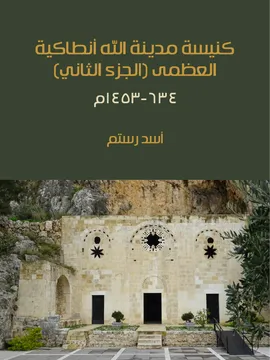

كنيسة مدينة الله أنطاكية العظمى (الجزء الثاني): ٦٣٤-١٤٥٣م

قراءة عربية أصلية محددة النطاق في الصفحات 9 إلى 14 من ملف PDF المرتبط، وليست تلخيصا كاملا للكتاب. نناقش ما تدعمه هذه المقاطع فقط.
نصارى الجزيرة قبل الإسلام: هذيم وعذرة وجهينة
يفتتح الفصل الأول «محمد والإسلام والنصارى ٦١٠–٦٣٢» بأن البحث السابق تناول انتشار النصرانية في بادية الشام شرقًا وغربًا، وأرجأ الكلام في انتشارها في قلب الجزيرة نفسها إلى حين البحث في ظهور الإسلام في مكة والمدينة وذيوعه شمالًا وشرقًا. ويستدل المؤلف من أقدم المراجع العربية الإسلامية أن أفرادًا وجماعات من قبائل هذيم وعذرة وطيء وحنيفة وجذام وجهينة وبلي وبهراء دخلوا في النصرانية قبل الإسلام، وأن بعض هؤلاء لم يسلم إلا بعد وفاة النبي. أقرب هذه القبائل للمدينة بنو هذيم وكانوا فقراء ضعفاء، وأما بنو عذرة فنزلوا وادي إضم في شمالي الحجاز وعرفوا برقة عواطفهم وطهارة عشقهم، وقد جاء في طبقات ابن سعد أن أمهات بعض الأنصار كن من بني عذرة. وكانت منازل جهينة بين المدينة والعقبة وفي سيناء حتى الفرما، ومنازل بلي بين المدينة وتبوك، ومن نصارى قضاعة بهراء بين بلي ومشارف الشام.
زاوية وحدود القراءة
قراءة موجزة من ص ٩ إلى ص ١٤ من أصل ٣٩٨ صفحة، تعرض بداية الفصل الأول، لا الكتاب كاملًا.
الطبعة والقراءة
هذه النسخة من الكتاب صادرة ومتاحة مجانًا من مؤسسة هنداوي بشكل قانوني؛ حيث إن نص الكتاب يقع في نطاق الملكية العامة تبعًا لقوانين الملكية الفكرية.
تنزيل PDF المجاني ↓ القراءة والمصدر الرسمي ↗